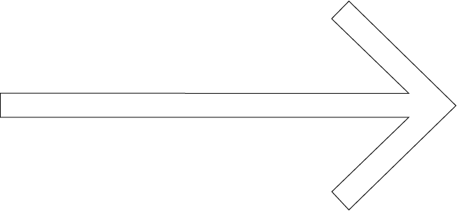

GLI INIZI
2 min. di lettura
Lucio Fontana è stato uno dei grandi protagonisti del Novecento, riconosciuto come il padre dello spazialismo, è arrivato piuttosto tardi alle sue opere più note, i suoi celeberrimi Concetti spaziali, risalenti alla fine degli anni Quaranta. Prima di allora, Fontana aveva sperimentato molto, con diversi materiali, tra cui gesso, bronzo e soprattutto ceramica.
In tutta la sua produzione artistica Fontana perseguì sempre l’idea di una esplorazione e conquista dello spazio, partendo dalle riflessioni di Umberto Boccioni, il solo artista che, secondo Fontana, era riuscito attraverso le sue opere a scoprire la quarta dimensione, ovvero a un’arte che si slegasse tanto dalla bidimensionalità della pittura quanto dalla staticità della scultura, per espandersi nello spazio.
Ma volendo trovare ulteriori antecedenti della “conquista dello spazio”, potremmo citare anche la libertà e il movimento dell’arte barocca, che secondo Fontana non avevano eguali, tanto che le sue prime ricerche con la ceramica possono essere avvicinate proprio alla scultura barocca, per il loro dinamismo, per l’arditezza del loro sviluppo. Tutte esperienze che lo condussero poi all’intuizione dei buchi, dei tagli, degli ambienti.
In tutta la sua produzione artistica Fontana perseguì sempre l’idea di una esplorazione e conquista dello spazio, partendo dalle riflessioni di Umberto Boccioni, il solo artista che, secondo Fontana, era riuscito attraverso le sue opere a scoprire la quarta dimensione, ovvero a un’arte che si slegasse tanto dalla bidimensionalità della pittura quanto dalla staticità della scultura, per espandersi nello spazio.
Ma volendo trovare ulteriori antecedenti della “conquista dello spazio”, potremmo citare anche la libertà e il movimento dell’arte barocca, che secondo Fontana non avevano eguali, tanto che le sue prime ricerche con la ceramica possono essere avvicinate proprio alla scultura barocca, per il loro dinamismo, per l’arditezza del loro sviluppo. Tutte esperienze che lo condussero poi all’intuizione dei buchi, dei tagli, degli ambienti.
